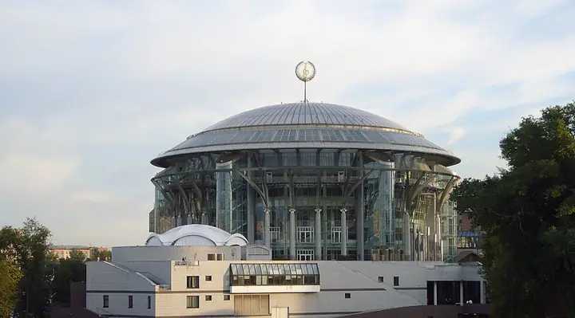

Подборку собрали 20 октября, прошедшие события скрыты. Свежая афиша — на главной

Фото: Nevermind2, общественное достояние · Wikimedia Commons
Концертный зал · ЦАО
Дом музыки
Концертный комплекс на Космодамианской набережной: классика, джаз и органные вечера.
- ₽₽ · 1 500–3 000 ₽ на человека
- в 2 планах
- 9 событий в афише
Позвать сюда: Дом музыкиОткрыть в каталоге: Дом музыкиМаршрут до места: Дом музыки
Адрес и детали
- Адрес
- Космодамианская наб., 52, стр. 8
Открыть на Яндекс Картах (в новой вкладке) - Метро
- м. Павелецкая
- Округ
- Центр (ЦАО)
- Цена
- 1 500–3 000 ₽ на человека
- Телефон
- +7 (495) 730-10-11
- Проверено
- работает — проверили в октябре 2026
Планы с этим местом 2
- Дом музыки · Концертный зал · м. Павелецкая
- 2 минуты пешкомCity Space · Панорамный бар
Классика, джаз или орган в Доме музыки, а потом лифт на 34-й этаж соседнего отеля: круглый бар City Space смотрит на реку на все 360°. Столы у окна не бронируют — идите сразу после концерта.
Открыть план: Концерт и бар на 34-м этажеПозвать сюда: Концерт и бар на 34-м этаже
Фото: Nevermind2, общественное достояние · Wikimedia Commons
- Дом музыки · Концертный зал · м. Павелецкая
- 15 минут пешкомРыба мечты · Рыбный ресторан
Концерт на Космодамианской набережной и ужин в особняке «Рыбы мечты».
Открыть план: Концерт и особняк на БалчугеПозвать сюда: Концерт и особняк на Балчуге
Фото: Nevermind2, общественное достояние · Wikimedia Commons

Афиша площадки 6 из 9
Дом музыки · м. Павелецкая · 800–3 000 ₽ · 6+
Британский джазовый вокалист с московскими музыкантами поёт Эллингтона, включая редко звучащие вещи. Два сета — спокойная альтернатива Хэллоуину.
Подробнее: Кливленд Уоткисс. Хиты Эллингтона и МонкаПозвать сюда: Кливленд Уоткисс. Хиты Эллингтона и МонкаБилеты : Кливленд Уоткисс. Хиты Эллингтона и Монка (страница с билетами, откроется в новой вкладке)
Фото: Nevermind2, общественное достояние · Wikimedia Commons
Дом музыки, Зал Альфреда Шнитке · м. Павелецкая · от 1 200 ₽ · 6+
Филипп Копачевский играет Шопена: ноктюрны, мазурки и полонезы. Романтичнее фортепианную программу придумать сложно.
Подробнее: Филипп Копачевский. ШопенПозвать сюда: Филипп Копачевский. ШопенБилеты : Филипп Копачевский. Шопен (страница с билетами, откроется в новой вкладке)
Фото: Nevermind2, общественное достояние · Wikimedia Commons
Дом музыки · м. Павелецкая · 1 200–2 500 ₽ · 6+
Камерный ансамбль играет собственные аранжировки песен Radiohead — не трибьют, а новое прочтение. Пятничный вечер для любителей и рока, и классики.
Подробнее: Хиты Radiohead. Simple Music EnsembleПозвать сюда: Хиты Radiohead. Simple Music EnsembleБилеты : Хиты Radiohead. Simple Music Ensemble (страница с билетами, откроется в новой вкладке)
Фото: Nevermind2, общественное достояние · Wikimedia Commons
Дом музыки, Светлановский зал · м. Павелецкая · от 2 500 ₽ · 6+
Хибла Герзмава меняет оперу на джаз и поёт стандарты с биг-бэндом Петра Востокова. Огромный Светлановский зал — повод надеть лучшее.
Подробнее: Хибла Герзмава и Большой джазовый оркестр Петра ВостоковаПозвать сюда: Хибла Герзмава и Большой джазовый оркестр Петра ВостоковаБилеты : Хибла Герзмава и Большой джазовый оркестр Петра Востокова (страница с билетами, откроется в новой вкладке)
Фото: Nevermind2, общественное достояние · Wikimedia Commons
Дом музыки, Зал Альфреда Шнитке · м. Павелецкая · от 1 000 ₽ · 12+
Посвящение Оскару Питерсону: трио контрабасиста Сергея Васильева и вокалистка Марина Волкова играют свинг и бибоп. Камерный пятничный джаз без больших трат.
Подробнее: Гений джаза Оскар Питерсон. Ламповый концертПозвать сюда: Гений джаза Оскар Питерсон. Ламповый концертБилеты : Гений джаза Оскар Питерсон. Ламповый концерт (страница с билетами, откроется в новой вкладке)
Фото: Nevermind2, общественное достояние · Wikimedia Commons
Дом музыки · м. Павелецкая · 600–3 000 ₽ · 6+
Ночной концерт: рок-хиты в переложении для органа, 1 час 20 минут без антракта. Начало в 22:30 — необычное свидание в последнюю пятницу года.
Подробнее: Ночное органное шоу Rock Night MysteryПозвать сюда: Ночное органное шоу Rock Night MysteryБилеты : Ночное органное шоу Rock Night Mystery (страница с билетами, откроется в новой вкладке)
Фото: Nevermind2, общественное достояние · Wikimedia Commons
Похожие рядом


Что ещё рядом
Как позвать
- Выбери план, место или событие — в карточке адрес, цены и маршрут в Яндекс Картах.
- Нажми «Позвать сюда» — соберётся приглашение-игра для свидания или голосование для компании.
- Отправь ссылку в любой мессенджер: тебе ответят, а компания отметит, куда и когда может. Бесплатно и без регистрации.